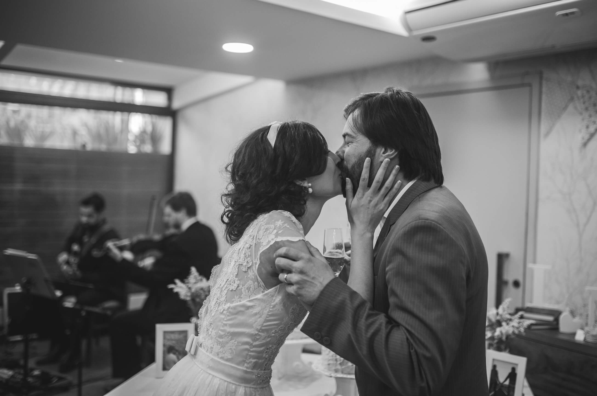
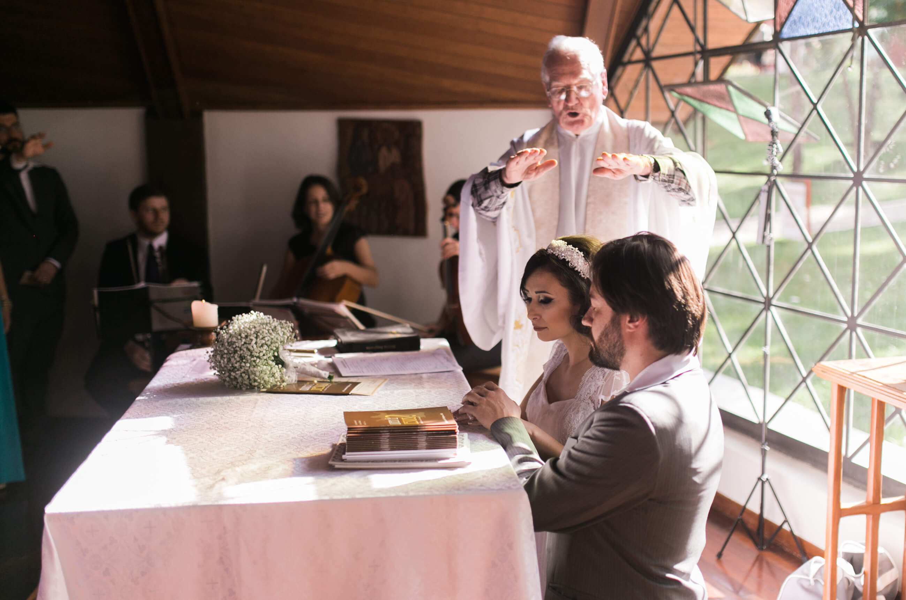
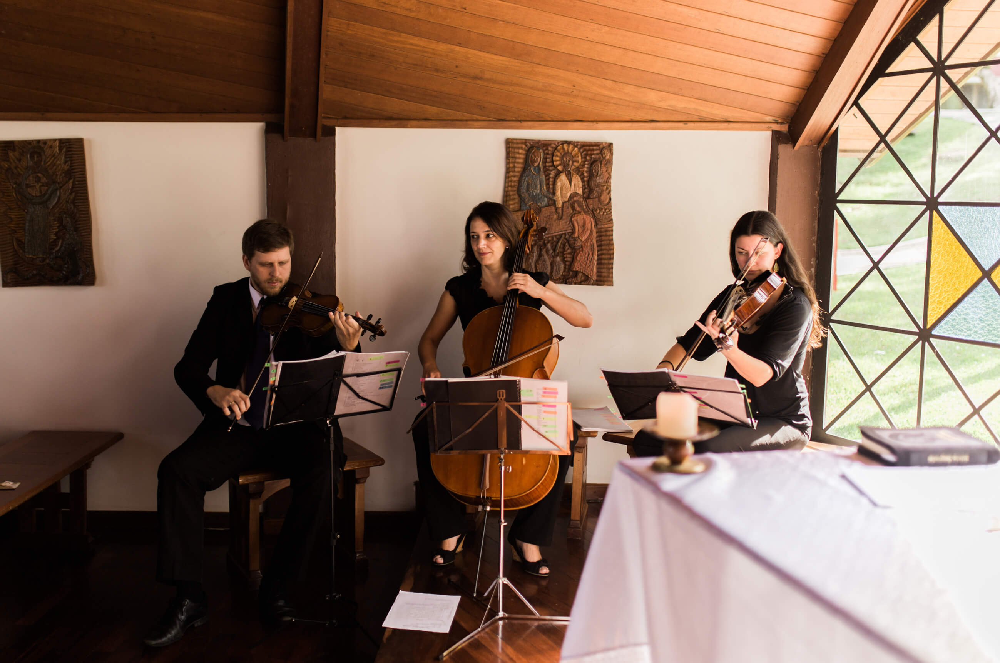
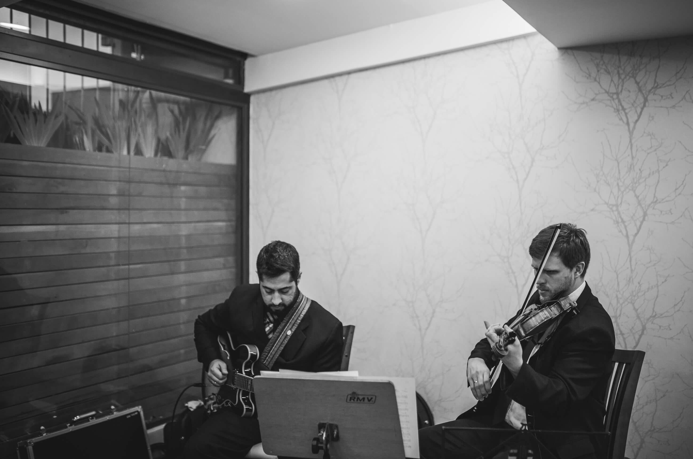
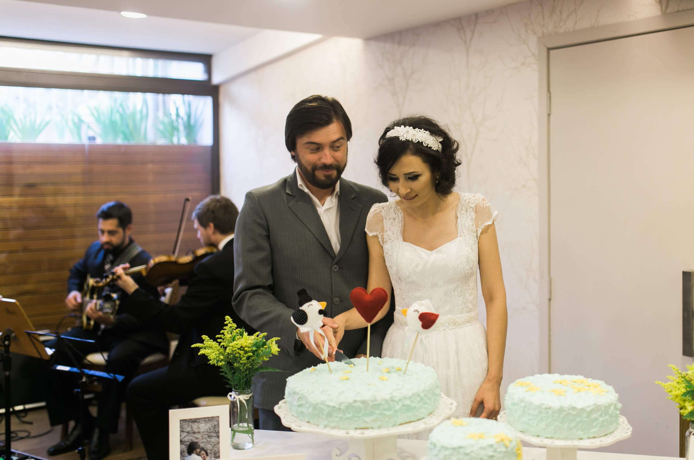

Mini Wedding - Lorena e Maurício - Curitiba
9 de outubro de 2017
Ispiração para mini wedding, o casamento de Lorena e Mauricio foi uma celebração intimista, charmosa e com muita música boa!

Mini Wedding QuartilisJá faz um tempo, mas um Mini Wedding especial como este merece um lugar no blog!
Aconteceu na charmosa Capela Nossa Senhora de Salette, em Curitiba, no dia 11 de abril de 2015! A música da cerimônia ficou por conta do Trio de Cordas (violino, viola erudita e cello), formação clássica, requintada e perfeita para o estilo da cerimônia escolhida pelos noivos.

Capela Nossa Senhora de Salette
Trio de Cordas QuartilisO repertório erudito foi escolhido a dedo e o ponto alto da cerimônia foi a entrada da noiva ao som da Ave Maria de Gounod. Emocionante!
(CLIQUE NOS NOMES DAS MÚSICAS PARA ASSISTIR OS VIDEOS DESTA CERIMÔNIA NO YOUTUBE)- Entrada dos padrinhos: Divertssement – Saint Preux
- Entrada dos pais: Aria da Corda Sol – Bach
- Entrada do noivo: Jesus Alegria dos Homens – Bach
- Entrada das damas: Minuet in G Major – Bach
- Entrada da noiva: Ave Maria – Gounod
- Benção das alianças: Ave Maria – Schubert
- Assinatura e cumprimentos: Cello Suite No. 1 – Bach
- Saída geral: Tema da Nona Sinfonia – Beethoven

Duo Violino e Guitarra QuartilisA recepção dos convidados aconteceu na Casa de Chá Anna e Anna e a música ao vivo também ficou por conta do Quartilis com o Duo de violino e guitarra tocando temas da MPB, Jazz e Blues. A música ao vivo deu um toque especial para a recepção deste Mini Wedding, que aconteceu no período da tarde e inicio da noite.

Quartilis Mini Wedding Fornecedores:- Local da Cerimônia: Capela do Santuário Nossa Senhora de Salette
- Local da Recepção: Casa de Chá Anna e Anna
- Fotografia (crédito das Fotos do Post): Lari Guimarães
- Convites e Papelaria: Emotion
- Make e penteado: Malu Moreira
Para mais dicas de repertório e música para casamento, veja o nosso post sobre Casamento Classico.